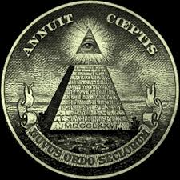

Donald Trump

Nous sommes une seule et même unité.
Nous sommes une organisation secrète mondiale opposée aux templiers, contre lesquels nous menons dans l'ombre une éternelle lutte. Si les templiers revendiquent le sauvetage de l'humanité en contrôlant son libre arbitre, la confrérie des Assasins lutte pour faire perdurer la liberté qui est l'essence-même du développement humain.
"Laa shay'a waqi'un mutlaq bale kouloun moumkin."
("Rien n'est vrai, tout est permis" en arabe.) -Tel est notre crédo.
Nos 3 préceptes sont :
"Ta lame ne versera pas le sang d'un innocent."
"Montre-toi, mais reste invisible."
"Jamais tu ne mettras la Fraternité en danger.
Nous agissons dans l'ombre pour éclairer le monde.
Illuminatis

Il existe deux manières de rentrer dans la Confrérie:
par naissance, ou par recrutement.
Après avoir été nommé Assassin et disciple du Credo, vous devrez prouver votre valeur pendant une certaine durée.
Les Assassins passent leurs vies à s'entraîner à tuer.
Dès le plus jeune âge, on leur apprend à analyser leur entourage. L'entraînement au combat, indispensable, était essentiellement à l'arme blanche.
Cependant, l'entraînement se consacrait fondamentalement à la discrétion, car la furtivité reste notre arme la plus redoutable.
Il est vital pour un Assassin d'atteindre sa cible sans attirer l'attention et de se mêler à la foule une fois l'acte accompli.
Des requêtes peuvent nous être communiquées dans la catégorie "Contact" de ce site, et la décision ne serait-ce que de considérer celles que nous recevons nous revient amplement.